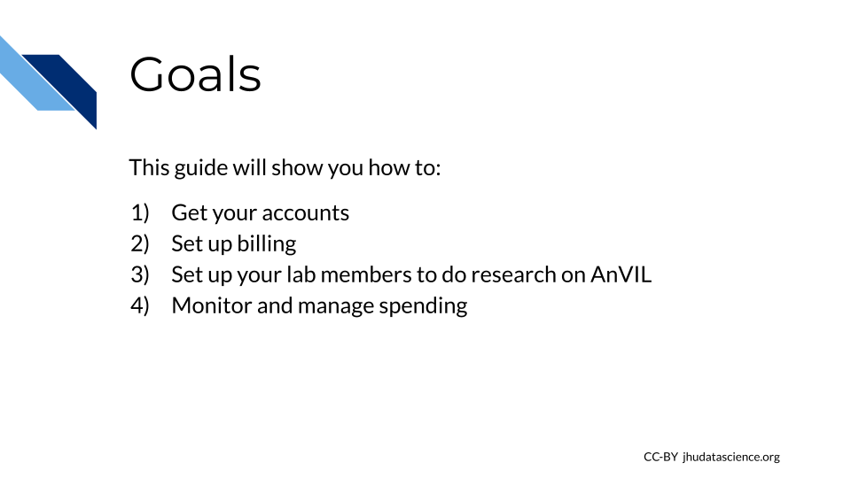

Chapter 2 PIs and Lab Managers
2.1 Introduction
2.1.1 Who is this guide for?
2.1.2 What’s in this guide?
2.1.3 Philosophy
2.2 Account Setup
This guide provides an opinionated walkthrough on how to set up AnVIL for your lab, based on experiences from many labs actively using AnVIL. Following our recommendations will help you configure your team so that you can more clearly see where charges are coming from and have greater control over which users can spend your money and access your data.
2.2.1 Goals for this guide

2.2.2 Overview
AnVIL uses Terra to run analyses. Terra operates on Google Cloud Platform, so you’ll pay for all storage and analysis costs through a Google account linked to Terra. The costs are the standard Google Cloud Platform fees for storing and moving data as well as executing an analysis. These costs are passed along through Terra without any markup.

- Create a Google account
- Set up Google Billing (and claim your free credits!).
- Add an administrator or viewer (optional)
- Link Terra to the Google Billing Account
- Create Terra Billing Projects
- Set budgets and alerts (optional, but highly recommended)
- Add users and Workspaces
2.2.3 Lab Management Roles
While there are many ways to configure your lab, this guide defines the following roles and responsibilities:
PI - The PI sets up the lab’s Google Cloud Account, creates its Google Billing Account(s), and Google Payment Method(s), links Terra with GCP, and invites Lab Managers to be Google Cloud “Billing Account Users.”
Lab Manager (Optional) - A Lab Manager creates or clones Terra Workspaces and manages who can use those Workspaces. The Lab Manager is also responsible for creating one or more Terra Billing Projects configuring GCP budgets and alerts. Importantly, lab managers control who can spend lab money and should have an understanding of Google Cloud Billing and Terra Billing Projects. Depending on your lab, the PI may choose to be the only Lab Manager, or may appoint trusted lab members to assist.
Data Analyst - A lab member who is granted write + can-compute access on one or more Terra Workspaces by a Lab Manager and who will run analyses in Terra. Data Analysts cannot share Terra Workspaces (this prevents them from enabling others to spend lab money).
2.2.4 Before you start
- You will need a credit card or bank account to activate your free trial and get started. Don’t worry! You won’t be billed until you explicitly turn on automatic billing, but payment information is needed for verification purposes.
- Before setting up billing yourself, you may want to check with your institutional procurement office and see if they have a preferred account set-up method with Google (such as a third party reseller or an existing account).
- To add lab members, you will need to know the Google account they will use to access Terra. You can complete most setup steps without this information and then add them once you know the correct accounts.
2.2.5 Step 1: Create a Google Account

Terra operates on Google Cloud Platform, so you will need a (free) Google account which will allow you to
- Access the Terra platform to manage team members, data, and analyses
- Access Google Cloud Platform to manage billing
- Receive alerts when spending reaches specified thresholds
If you do not already have a Google account that you would like to use for accessing Terra, create one now.
If you would like to create a Google account that is associated with your non-Gmail, institutional email address, follow these instructions.
2.2.6 Step 2: Set up Google Billing

Terra operates on Google Cloud Platform, and does not charge any markup. Rather than paying Terra or AnVIL, users set up billing directly with Google Cloud Platform.
Make sure to use the same Google account ID you use to log into Terra for Google Cloud Billing.
To set up billing, you must first create a Google “Billing Account”. You can create multiple Billing Accounts associated with your Google ID. We recommend creating separate Billing Accounts for different funding sources.
2.2.6.1 Create a Google Billing Account
- Log in to the Google Cloud Platform console using your Google ID.
- Make sure to use the same Google account ID you use to log into Terra.
- If you are a first time user, don’t forget to claim your free credits!
- If you haven’t been to the console before, once you accept the Terms of Service you will be greeted with an invitation to “Try for Free.”

- Follow the instructions to sign up for a Billing Account and get your credits.
- Choose “Individual Account”. This “billing account” is just for managing billing, so you don’t need to be able to add your lab members.
- You will need to give either a credit card or bank account for security. Don’t worry! You won’t be billed until you explicitly turn on automatic billing.

- You can view and edit your new Billing Account, by selecting “Billing” from the left-hand menu, or going direction to the billing console console.cloud.google.com/billing

- Clicking on the Billing Account name will allow you to manage the account, including accessing reports, setting alerts, and managing payments and billing. We will cover account management in greater detail below.

At any point, you can create additional Billing Accounts using the Create Account button. We recommend creating a new Billing Account for each funding source.
2.2.6.2 Add users or viewers (optional)
If you have a project manager or finance administrator who needs access to a Billing Account, you can add them with a few different levels of permissions. Generally the most useful are:
- Users have a great deal of power over spending - they can create new “Billing Projects” and control who can spend money on those projects. If you have a lab or accounts manager responsible for expenses, it may make sense to add them as a Billing Account User. If you wish to retain full control over who can spend money on GCP, you should not add any Users.
- Viewers can see the activity in the Billing Account but can’t make any changes. This can be useful for finance staff who need access to the reports, or for lab members to be able to see what their analyses are costing.
Anyone you wish to add to the Billing Account will need their own Google ID.
To add a member to a Billing Project
- Log in to the Google Cloud Platform console using your Google ID.
- Navigate to Billing
- You may be automatically directed to view a specific Billing Account. If you see information about a single account rather than a list of your Billing Accounts, you can get back to the list by clicking “Manage Billing Accounts” from the drop-down menu.

- Check the box next to the Billing Account you wish to add a member to, click “ADD MEMBER”.
- Enter their Google ID in the text box. In the drop-down menu, mouse over Billing, then choose the appropriate role.
- Click “SAVE”.


2.3 Budget Templates
If you want to apply for a grant and you plan to use the AnVIL platform for data storage, data movement, and data analysis, you can include the anticipated costs in your proposal. We have created a template for the budget justification paragraph of your grant proposal. The documents described in the following provide you with insightful knowledge.
2.3.1 Types of Costs
There are three types of costs that are typically occur when performing operations on the Google Cloud Platform.
1. Cost for Computing is driven by your particular CPU and memory requirements. Importantly, you can save money if your work can tolerate being interrupted (also known as a preemptible compute resource). In this case, you pay less per hour with the understanding that your work may be interrupted by a customer willing to pay more. Details and current pricing can be found here.
2. Cost for Storage is driven by the amount of data and the length of time you wish to store the data. Here, you can save money if you have data that you do not plan to access frequently. This would be the case for raw data that has already been processed, backups, and archives. Details and current pricing can be found here.
3. Cost for Network Usage (egress) applies to data being transferred out of a Cloud resource. In this context, a Cloud resource refers to a set of computers in a particular region. This would apply, for example, if you transferred data from Google’s East Coast computers to Amazon’s West Coast computers. In general, while it’s free to upload data to the Cloud, you will incur costs when downloading data to your local computer or between Cloud regions. Details and current pricing can be found here.
2.3.2 Usage of Budget Templates
In a first step, you can use the template Google Sheet AnVIL_Cost_Estimator to calculate costs for computing, storage, and network usage (egress) for your proposal. In a second step, you can use the template Google Doc AnVIL_Budget_Justification to create a budget justification paragraph for your proposal by including the information highlighted in pink (mostly copying entries from your Google Sheet AnVIL_Cost_Estimator). Please download and adapt both documents to your project.
Please check that the prices are up to date by using the links listed below or in the AnVIL_Cost_Estimator.
For further guidance, you can have a look at a completed document AnVIL_Budget_Justification_Example.